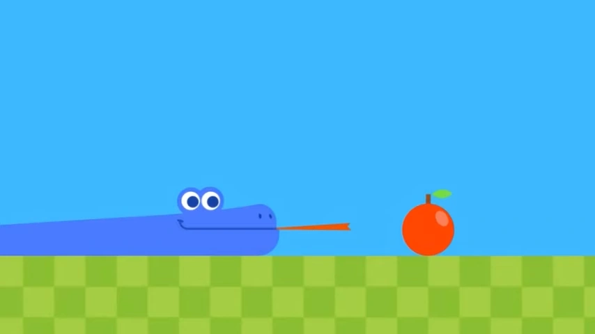

My Projects

Google Snake AI
In this project, our goal was to design and implement a genetic neural network for playing the classic game, Snake. We utilized a genetic algorithm to train the neural network, with the primary objective of optimizing food collection efficiency within the game.
View Project
C Projects
My C projects encompass a variety of applications and solutions, illustrating my proficiency in the C programming language. These projects exemplify my ability to work with pointers, memory management, and other essential aspects of C while tackling real-world challenges.
View Project
My Socials